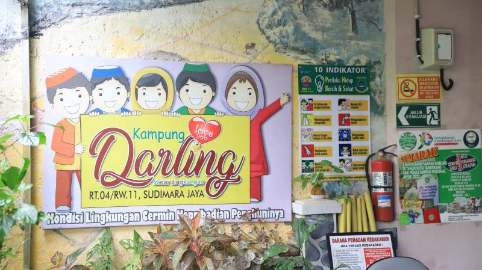
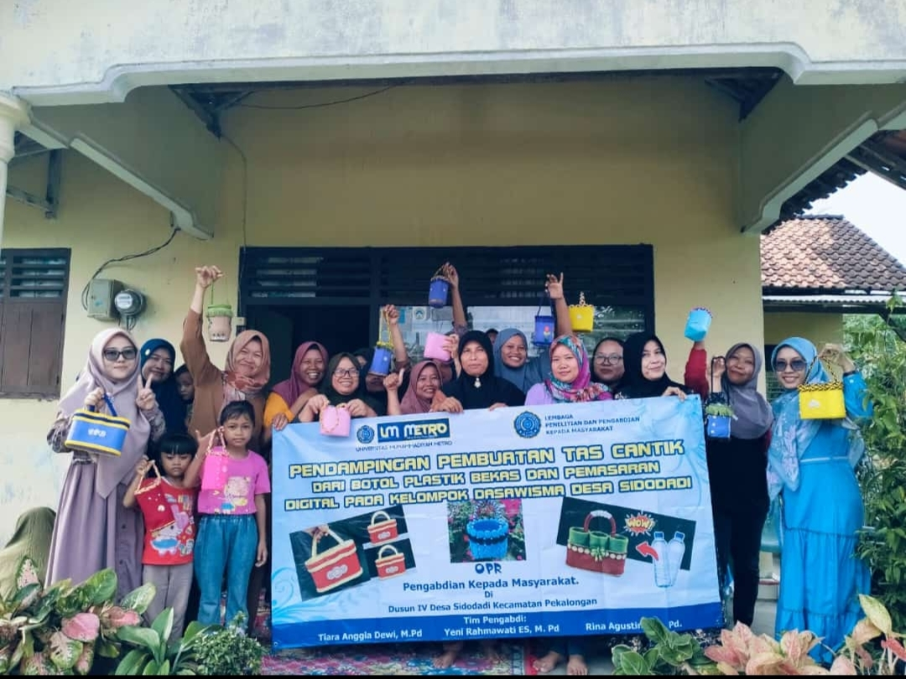
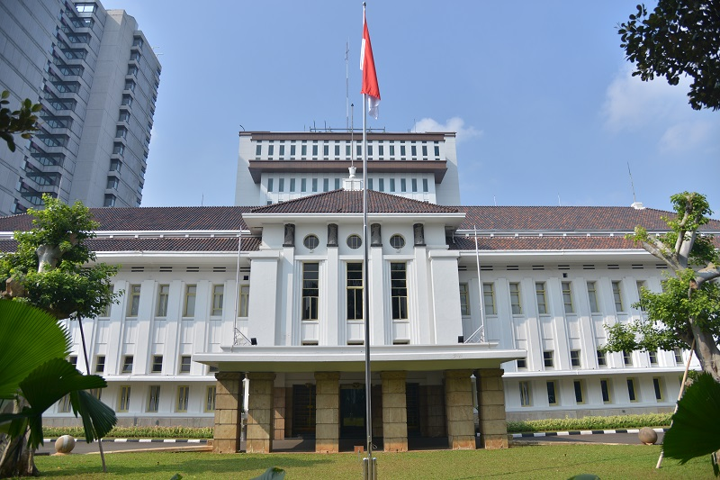
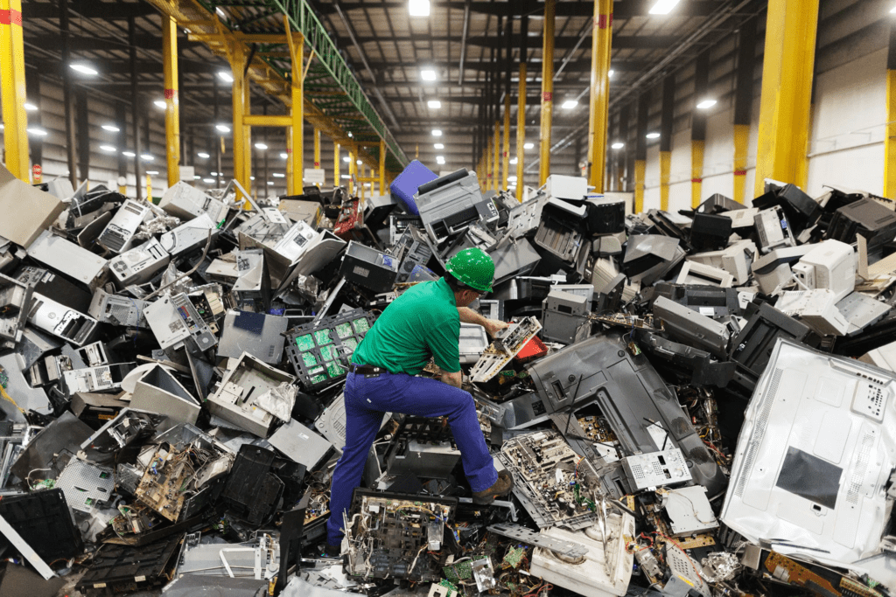

Kabupaten Cirebon, Jawa Barat.
Heriyanto, seorang perajin asal Kabupaten Cirebon, Jawa Barat, memiliki kreativitas unik dalam memanfaatkan limbah tulang ayam. Ia mengolah limbah tersebut menjadi miniatur kendaraan seperti sepeda, motor, dan becak. Selain tulang ayam, Heriyanto juga memanfaatkan limbah lain, seperti tutup bedak, untuk bagian roda miniatur. Baca selengkapnya
Pelajaran dari Heriyanto:
Ciledug, Tangerang
Bank Sampah Kampung Darling (Sadar Lingkungan) di Sudimara Jaya, Ciledug, Kota Tangerang, telah berhasil mengubah sampah menjadi berkah bagi masyarakat sekitarnya. Sejak didirikan pada tahun 2019 sebagai bagian dari pengembangan kampung tematik, Kampung Darling menerapkan program 3R (Reduce, Reuse, Recycle) untuk mengelola sampah di lingkungan mereka. PPID KOTA TANGERANG Dengan memiliki 130 nasabah, Bank Sampah Kampung Darling mampu mengumpulkan sekitar satu ton sampah bernilai ekonomis setiap bulannya. Sampah-sampah tersebut diolah menjadi berbagai barang berguna dan bernilai jual, seperti tempat sampah, pot tanaman, hiasan ruangan, pupuk tanaman, eco enzim alami, hingga minuman probiotik hasil fermentasi kulit nanas yang bermanfaat bagi kesehatan.
Baca selengkapnyaPelajaran dari Bank Sampah Kampung Darling:
Kecamatan Arma Jaya, Kabupaten Bengkulu Utara, Provinsi Bengkulu
Kelompok Dasawisma di Desa Sidodadi telah menunjukkan inovasi dalam pengelolaan sampah plastik dengan mengubah botol plastik bekas menjadi tas cantik yang bernilai ekonomis. Melalui pelatihan intensif, anggota kelompok mempelajari teknik daur ulang kreatif, yang tidak hanya meningkatkan keterampilan dan kreativitas warga dalam mengelola sampah plastik, tetapi juga berkontribusi signifikan terhadap pengurangan limbah lingkungan. Program ini berhasil membuka peluang usaha baru bagi masyarakat desa, berdampak positif terhadap perekonomian lokal, dan membuktikan bahwa pengelolaan sampah berbasis komunitas dapat menjadi solusi efektif dalam menangani masalah lingkungan sekaligus meningkatkan kesejahteraan masyarakat.
Baca selengkapnyaPelajaran dari Rina:
Bekasi, Jawa Barat
Tri Handoko, seorang inovator dari Bekasi, menciptakan bahan bangunan seperti paving block dan batako dari limbah plastik. Dengan teknik pemrosesan khusus, limbah plastik yang sulit terurai diubah menjadi material yang kuat dan tahan lama. Hasil produksinya telah digunakan dalam berbagai proyek pembangunan ramah lingkungan.
Baca selengkapnyaPelajaran dari Tri Handoko:
Jakarta, Indonesia
Komunitas Waste4Change berfokus pada pengelolaan sampah elektronik yang kerap menjadi limbah berbahaya bagi lingkungan. Dengan sistem pengumpulan dan pengolahan yang terorganisir, mereka berhasil mendaur ulang komponen elektronik bekas menjadi bahan baku baru untuk industri. Selain itu, mereka juga memberikan edukasi kepada masyarakat tentang pentingnya membuang sampah elektronik dengan cara yang benar.
Baca selengkapnyaPelajaran dari Waste4Change: